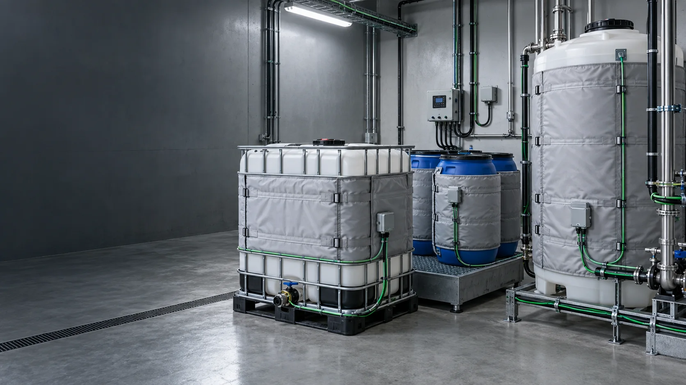
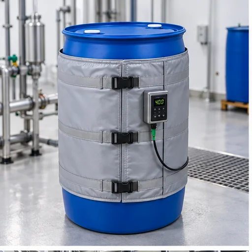
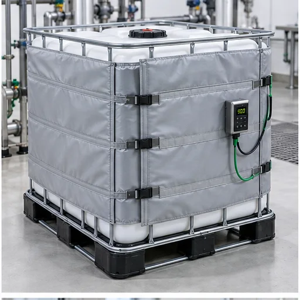
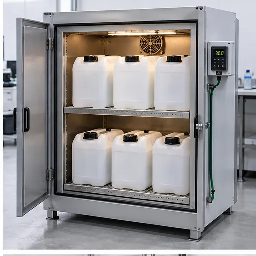
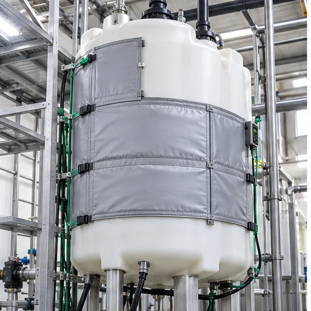
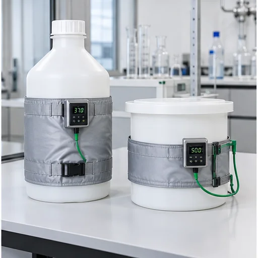
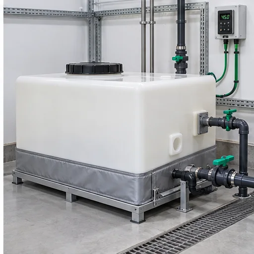

Замерзание продукта
Снижаем риск ледяного расширения, повреждения ёмкости и простоя.

Для малой промышленности
Инженерные системы для бочек, еврокубов, канистр и нестандартных пластиковых баков. Защищаем продукт от замерзания, загустения и кристаллизации.
Система подбирается с учётом допустимой температуры пластика и характеристик содержимого.
Снижаем риск ледяного расширения, повреждения ёмкости и простоя.
Сохраняем текучесть масел, ГСМ, сиропов, клеёв и ЛКМ.
Предотвращаем осадок, расслоение и закупорку насосов.
Поддерживаем режим пищевых и технологических жидкостей.
Учитываем датчики, патрубки и уязвимые участки.
Решение зависит от формы, объёма, материала стенок и способа эксплуатации.

200–220 л. Нагревательные пояса, кабель или термочехол.

IBC около 1000 л. Чехлы и комбинированные решения.

Локальные нагреватели, термоматы или мини-теплокамеры.

Саморегулирующийся кабель, термоматы или донный нагрев.

Кабельный обогрев под изоляцию или чехол по форме.

Два варианта решения
Нагрев, управление, теплоизоляция и крепёж рассчитываются совместно.
Цель: заданный температурный диапазон при минимальных теплопотерях.
Проектируем систему с учётом ограничений пластика и свойств продукта.
Пластик, продукт, температура, среда, изоляция и геометрия.
Кабель, управление, коробки, изоляция и крепёж.
Термочехлы по лекалам для нестандартных форм.
Чертежи, схемы, спецификации и 3D-сканирование.
Работы специалистами КОРДА или под контролем.
Проверка материалов и ОТК готовых изделий.
Консультации и доработка конструкции.
Гарантийное обслуживание и ремонт термочехлов.
От исходных данных до пусконаладки и документации.
Что греем, где и до какой температуры.
Размеры, пластик, продукт, среда, питание.
Теплопотери, мощность, изоляция, шаг кабеля.
Кабель, управление, материалы, комплектующие.
3D-сканирование и лекала при необходимости.
Техническое решение, спецификация и смета.
Изготовление чехла и интеграция нагревателя.
Комплектация и доставка по России и СНГ.
Монтаж или шеф-монтаж на объекте.
Проверка и запуск системы.
Сертификаты, паспорта и исполнительные документы.
Гарантия, сервис и консультации.
Серия определяется расчётом и условиями эксплуатации.
Для ёмкостей и малых задач, до +65 °C.
Экранированный кабель для разных ёмкостей.
Фторполимерная изоляция, до +120 °C.
Для промышленных ёмкостей, до +120 °C.
Для пластика критичны недостаточная мощность и локальный перегрев.
Риск деформации и разгерметизации.
Продукт продолжает замерзать или густеть.
Растут теплопотери и расход энергии.
Патрубки создают холодные зоны.
Повышается расход и риск перегрева.
Компоненты не соответствуют среде.
Плохой контакт создаёт электрические риски.
Зазоры ухудшают равномерность прогрева.
Системы для ёмкостей и оборудования в сложных условиях.
Термочехол с кабелем и многослойной изоляцией.
Монтаж — 2 минуты.
Термочехлы Lavita для компрессорной станции.
Монтаж — 20–30 минут.
8 термочехлов для открытого воздуха до −50 °C.
Монтаж — 10 минут.
«Корда-ЧСТЭ-200» и кабель ISR 60-2 CT.
Монтаж — 20–30 минут.
Съёмная изоляция для ёмкости при +60 °C.
Монтаж — 20–30 минут.
Инженерный расчёт
Нужны размеры, материал стенок, продукт, температура, условия среды, изоляция, питание и сведения о патрубках и КИП.